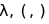
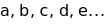

Cálculo Lambda
| Posted on: | 05/10/2023 12:42:09 AM |
| Last edited: | 05/10/2023 01:13:50 AM |

Imagen de Universidad de Princeton (s.f.)
Alonzo Church nació el 14 de junio de 1903, en Washington, D.C. Su padre fue un juez. Estudió en la Universidad de Princeton y obtuvo una Licenciatura en Matemáticas. Se graduó en 1924 y pasó a obtener un doctorado en los próximos tres años bajo Oswald Veblen.
Fue maestro de filosofía y matemáticas por casi cuarenta años. Dentro de sus trabajos notables, se encuentra su desmostración al problema Entscheidungsproblem, desarrollado independientemente de Alan Turing y en donde llegaron a la misma conclusión. Se destaca por haber inventado el Cálculo Lambda, un sistema de notación para funciones y sus aplicaciones. Church fue el asesor de tesis de Alan Turing, también en la universidad de Princeton.
Artículos Notables en Revistas Científicas
- Church, A. (1932). A Set of Postulates for the Foundation of Logic. Annals of Mathematics, 33(2), 346–366. https://doi.org/10.2307/1968337
- Church, A. (1933). A Set of Postulates For the Foundation of Logic. Annals of Mathematics, 34(4), 839–864. https://doi.org/10.2307/1968702
- Church, A. (1936). An Unsolvable Problem of Elementary Number Theory. American Journal of Mathematics, 58(2), 345–363. https://doi.org/10.2307/2371045
- Church, A. (1941). The Calculi of Lambda Conversion. (AM-6). Princeton University Press. http://www.jstor.org/stable/j.ctt1b9x12d
1. Introducción
El Cálculo Lambda es un Sistema Formal que busca definir una notación para funciones y sus aplicaciones. Fue desarrollado durante el siglo XX.
El Cálculo Lambda pretende definir un modelo que utilice la abstracción pura para definir funciones y aplicar las mismas, definiendo objetos primitivos para poder realizar generalizaciones.
Ha sido la base para muchos lenguajes de programación de tipo funcionales, incluyendo CommonLISP, Scala, entre otros. Asimismo, el concepto de los lenguajes funcionales se deriva, en parte, de las investigaciones de Church y otros matemáticos. Los lenguajes funcionales ofrecen un nuevo paradigma para observar, modelar y diseñar algoritmos.
Esta investigación busca ofrecer una introducción al Cálculo Lambda a través de varias perspectivas, incluyendo un análisis de la Teoría desarrollada por Church, así como los usos dentro de las Ciencias de la Computación, sus diferencias con otros lenguajes de programación y usos dentro de las Matemáticas.
2. ¿Qué es una Función?
Una función, también llamada transformación u operación, es una regla de correspondencia por la cual se obtienen valores a través de argumentos. Es decir, le proveemos a una función un argumento (también referido como un valor de entrada[1]) y obtenemos el valor de la función para ese argumento (también referido como valor de salida[1]).
Para estas llamadas funciones no necesitamos utilizar todos los posibles valores dentro de los números, sino que podemos definir la existencia de nuestra función sólo bajo cierto rango de valores para los que nuestra función será válida. Cuando la función sea aplicada con un argumento cuyo valor no coincida dentro del rango especificado, se podrá decir que no tiene sentido aplicar la función con ese argumento.
Para el Cálculo Lambda, se utiliza una noción de la aplicabilidad de una función de una manera más abierta. Normalmente, no se permitiría utilizar dentro de una función f como argumento la misma función f. El Cálculo Lambda define teoremas de consistencia que permitirán que esta noción sea válida para este sistema formal (Church, 1941).
3. Abstracción
La abstracción se refiere a la generalización de problemas para poder obtener soluciones generales a un problema en específico. Estas generalizaciones de problemas se derivan de problemas concretos y después se empiezan a sustituir los objetos concretos por nombres, para así generalizar las instancias de estos objetos concretos, convirtiéndose en instancias generalizadas y obteniendo así soluciones generales.
Ejemplo de un problema concreto:
Ejemplo 1:
Considere que quiere comprar 9 productos a 10 pesos cada uno.
La fórmula para el costo total es:

En el Ejemplo 1., se realiza una operación concreta de la multiplicación en los valores concretos 10 y 9. Para obtener una solución general al problema, se abstrae el número de productos y el precio por cada producto.
Ejemplo 2:
Considere que quiere comprar 5 productos a 10 pesos cada uno.
La fórmula para el costo total es:

Ahora, se puede utilizar la fórmula del Ejemplo 2. para evaluar un problema con diferentes valores y no se depende en valores específicos para explicar la solución a un problema general.
Se puede decir que la abstracción está completa pero también se puede volver a abstraer de nuevo extrayendo la operación que se realiza a los números, es decir, el signo de multiplicación: *. Se deja como ejercicio al lector el crear una fórmula que permita cambiar de operación (como división, multiplicación, etcétera). Evidentemente, la nueva fórmula respondería a un problema general mayor y no solamente al problema general de obtener el costo total.
“La Abstracción se basa en la generalización a través de la introducción de un nombre para reemplazar un valor y especialización a través del reemplazo de un nombre con otro valor.” (Michaelson, 1989)
4. Escribiendo Cálculo Lambda
Escribir Cálculo Lambda[2] bajo la sintaxis que Church diseñó permite tener un sistema formal en donde si no coincide con el sintaxis no será un término lambda correcto. Cualquier término que esté sintácticamente correcto será válido en el sistema formal de Cálculo Lambda[2].
Los símbolos primitivos que se utilizan son:

Léase como “lambda, paréntesis abierto, paréntesis cerrado”.
También se utilizan una cantidad de símbolos infinitos llamados variables:

Se recomienda utilizar las letras del abecedario.
Los términos-λ (léase términos lambda) se definen inductivamente:
- toda variable es un término-λ válido
- término-λ de aplicación: si M y N son términos-λ, entonces también lo es ( M N )
- término-λ de abstracción: si M es un término-λ y z es una variable, entonces ( λz[M] ) un término-λ
(Stanford Encyclopedia of Philosophy, 2021)
8. Notación Alternativa
Al hacer investigaciones acerca del Cálculo Lambda, se pueden encontrar diferentes notaciones. Church propuso diferentes sintaxis para definir el Cálculo Lambda. Las siguientes expresiones son equivalentes:

Para estas expresiones, el uso de paréntesis es opcional e incluso al aplicar una función no se necesitan paréntesis en algunos casos pero sí se pueden utilizar para tener una notación más explícita.
Church utilizó corchetes[3] en artículos anteriores como “An Unsolvable Problem of Number Theory” (1936) y “A Set of Postulates for the Foundation of Logic” (1932). Sin embargo, él recalca en “The Calculi of Lambda-Conversion” (1941) que los corchetes[3] se pueden reemplazar con puntos, de tal manera que el punto reemplaza directamente al corchete abierto y el corchete cerrado se elimina por completo.
9. Bibliografía
- Church, A. (1932). A Set of Postulates for the Foundation of Logic. Annals of Mathematics, 33(2), 346–366. https://doi.org/10.2307/1968337
- Church, A. (1936). An Unsolvable Problem of Elementary Number Theory. American Journal of Mathematics, 58(2), 345–363. https://doi.org/10.2307/2371045
- Church, A. (1941). The Calculi of Lambda Conversion. (AM-6). Princeton University Press. http://www.jstor.org/stable/j.ctt1b9x12d
- Michaleson, Greg. An Introduction to Functional Programming through Lambda Calculus. ISBN 0-201-17812-5
- The Lambda Calculus. (2021). Stanford Encyclopedia of Philosophy. Revisado el 2 de Mayo, 2023, de https://plato.stanford.edu/archives/sum2021/entries/lambda-calculus/
Referencias
- [1] Estos términos normalmente son referidos dentro de las Ciencas de la Computación.
- [2] Técnicamente Church le llamó “The Calculus of lambda-conversion” ó “El Cálculo de la conversión-lambda”. La mayoría de la literatura al respecto le llama Cálculo Lambda.
- [3] En inglés conocido como “square brackets” o “brackets”.